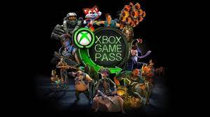

Xbox Game Pass and PC Game Pass are video game subscription services from Microsoft.
Both services grant users access to a rotating catalog of games from a range of publishers and other premium services, including Xbox Live Gold and EA Play, for a single monthly subscription price.
Xbox Game Pass provides this service on Xbox Series X/S and Xbox One consoles, as well as Android, iOS, and iPadOS devices via Xbox Cloud Gaming, selected Samsung TVs via Xbox Cloud Gaming, while PC Game Pass provides the service to personal computers using Windows 11 and Windows 10 or MacOS with support for Xbox Cloud Gaming.
The service was launched on June 1, 2017, while Xbox Live Gold subscribers received priority access on May 24.
Click here
About Game Pass

Since its launch game pass has over 300 games and has over 25 million subscribers in 2023. They have many know games such as all the halo games, minecraft, skyrim and DOOM for example.